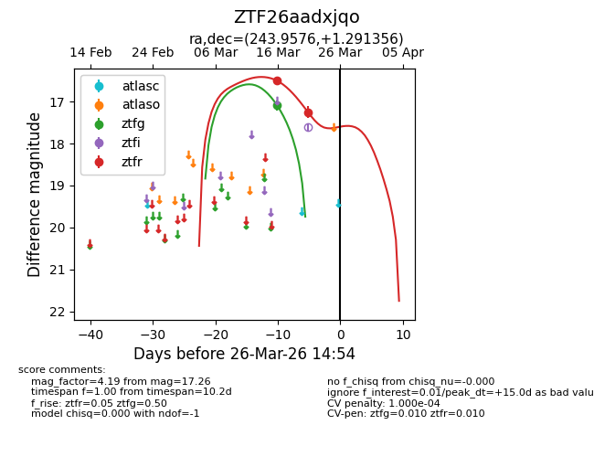
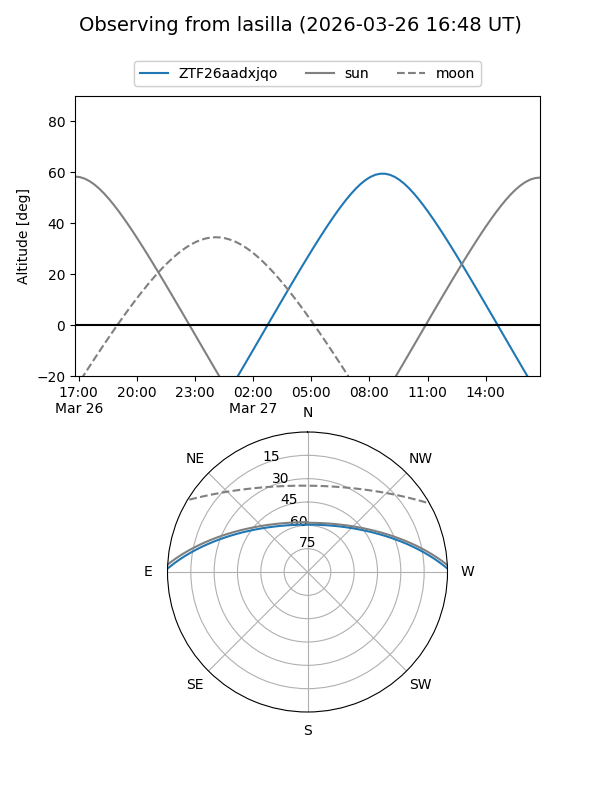
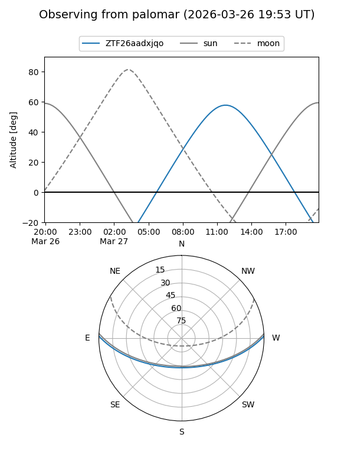
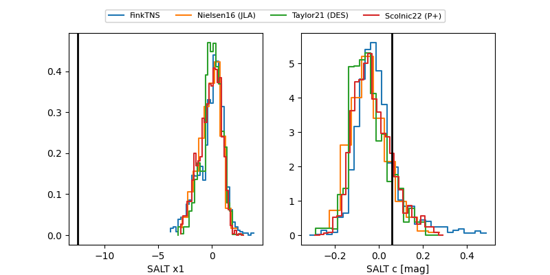

ZTF26aadxjqo
Target ZTF26aadxjqo at 2026-03-26 14:56
Aliases and brokers:
FINK: link
Lasair: link
ALeRCE: link
alt names
ZTF26aadxjqo (ztf,fink_ztf)
Coordinates:
equatorial (ra, dec) = 243.9576,+1.29136
equatorial (HMS+DMS) = 16:15:49.83,+01:17:28.88
galactic (l, b) = (14.0421,+34.68307)
Flags:
likely cv
Photometry:
last ztfg=17.10, ztfr=17.26
1 ztfg, 2 ztfr detections
Lightcurve

Visibility


Additional plots
